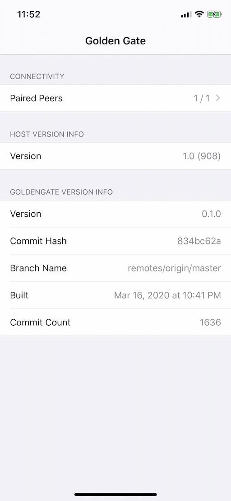
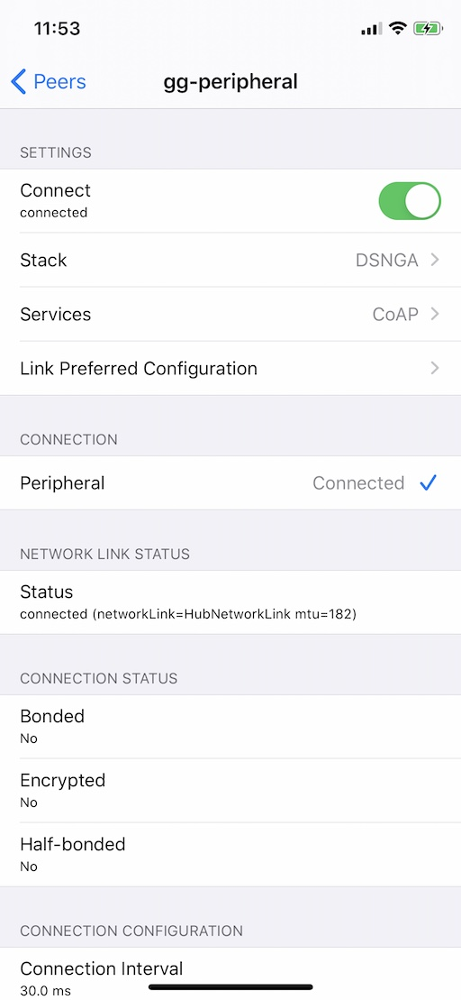

iOS Host App¶
The iOS Host App is a simple app that offers a very basic user interface to allow scanning, connecting to and interacting with another device or app over Bluetooth.
Screens¶
Main Screen¶
This screen is what you see when you launch the app. It shows some of the build configuration information, and a "Paired Peers" navigation button that takes you to the "Paired Peers" screen.

Paired Peers Screen¶
This screen shows a list of paired peers and their status. You can add a peer
to the list by tapping the  button.
button.
You can tap the  button to go to the "Peer" screen and
interact with the peer.
button to go to the "Peer" screen and
interact with the peer.
Note
The term "paired" here doesn't refer to Bluetooth pairing and bonding, it just means that it is a peer that has been found and saved in a list of peers

Peer Screen¶
This screen allows you to configure the stack used to communicate with the peer, and see some of the parameters of the current connection.
The "Stack" navigation button is used to navigate to a screen where you can select the stack configuration you want.
The "Services" navigation button takes you to the "Services" screen where you can select what services will be connected through the stack.
The "Connect" toggle can be used to connect to / disconnect from the peer.
Note
Any change in stack configuration or service type must be done prior to connecting. Once connected, those cannot change.

Services Screen¶
This screen allows you to interact with the peer. Depending on the service that you have selected. Use the "Service" navigation button to select between:
- None - no service (the stack is configured, but no service is attached to it)
- CoAP - a CoAP server and client are attached to the stack
- Blasting - a "blast" performance test service is attached to the stack

CoAP¶
When the selected service is "CoAP", the COAP section of the screen allows you to send a CoAP request to the peer, and any response received back will be displayed in a popup.
Blast¶
When the selected service is "Blast", the "Blast" toggle can be used to
start/stop blasting packets to a blast receiver.
The "Packet Size" option lets you select the packet size when blasting, from
30 bytes to 1000 bytes.
Stack Screen¶
This screen lets you select the stack configuration you want. The available stack configurations are:
G- Just GattlinkNG- Same asG+ Network InterfaceSNG- Same asNG+ UDP SocketDSNG- Same asSNG+ DTLSDSNGA- Same asDSNG+ Traffic Analyzer (default choice)

Pair Screen¶
The "Pair" screen allows you to scan for compatible devices that are advertising. Each device appears in a list with its advertised name and signal strength. To select a device to pair with, just tap on its entry in the list.